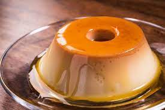
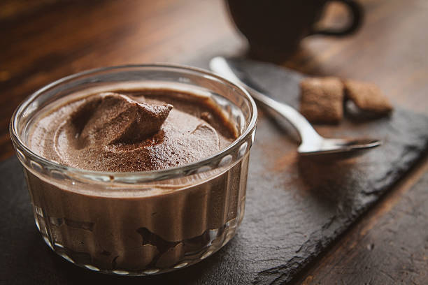
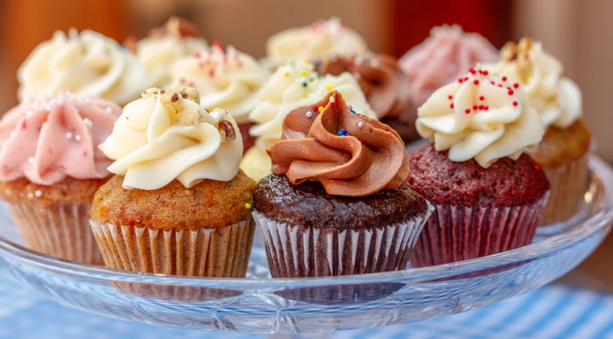
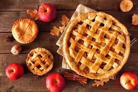

11.46.50_ff3c608b.png)
Good Cheefe: O Seu Destino Culinário Online
Bem-vindo à seção de doces do "Good Chef"! Prepare-se para uma jornada culinária repleta de tentações
açucaradas. Nossa página de receitas doces é o paraíso dos amantes de sobremesas, com uma coleção
irresistível de delícias açucaradas. De bolos extravagantes a sobremesas clássicas, descubra receitas
testadas e aprovadas que farão sua boca se encher de água. Aventure-se na criação de sobremesas gourmet com
nossas orientações detalhadas e dicas de especialistas. Com o "Good Chef", sua paixão por doces se tornará
uma arte culinária incrível.
Receita De Pudim

Delicie-se com nosso pudim cremoso e irresistível. Esta receita clássica combina suavidade e doçura em cada colherada. Perfeito para satisfazer os desejos de sobremesa, o nosso pudim é uma escolha infalível para momentos de indulgência. Surpreenda seus convidados com essa sobremesa simples de fazer, mas absolutamente deliciosa.
Ingredientes
Pudim
- 1 lata de leite condensado (395g)
- 2 latas de leite (use a lata de leite condensado vazia para medir)
- 3 ovos
Ingredientes
Calda
- 1 colher de sopa de açúcar
- 2 colheres de sopa de água
Modo de Preparo
- Comece preparando a calda: Em uma panela, adicione o açúcar e a água. Leve ao fogo médio e deixe cozinhar, mexendo ocasionalmente, até que a calda fique dourada. Despeje a calda em uma forma de pudim, espalhando-a uniformemente no fundo. Reserve.
- Pré-aqueça o forno a 180°C
- No liquidificador, coloque o leite condensado, o leite e os ovos. Bata tudo até obter uma mistura homogênea.
- Despeje a mistura do liquidificador na forma caramelizada.
- Cubra a forma com papel-alumínio e coloque-a em uma assadeira maior. Preencha a assadeira maior com água quente, criando um banho-maria.
- Leve ao forno pré-aquecido e asse por aproximadamente 1 hora ou até que o pudim esteja firme. Você pode verificar a consistência inserindo um palito no pudim; se sair limpo, o pudim está pronto.
- Retire a forma do forno e deixe o pudim esfriar à temperatura ambiente.
- Depois de frio, leve o pudim à geladeira por algumas horas ou durante a noite para que ele fique bem firme.
- Para desenformar, passe uma faca ao redor das bordas do pudim para soltá-lo da forma. Coloque um prato sobre a forma e vire com cuidado, de modo que a calda escorra sobre o pudim.
Receita De Mousse de Chocolate

O Mousse de Chocolate é uma sobremesa clássica que agrada a todos, desde crianças até adultos. Sua textura leve e aerada, combinada com o sabor rico do chocolate, faz com que seja uma opção perfeita para encerrar uma refeição ou agradar a si mesmo em qualquer ocasião especial. Esta receita é incrivelmente simples de preparar e resulta em um mousse de chocolate sedoso e indulgente que derrete na boca. Sirva com um toque de chantilly e raspas de chocolate para um deleite verdadeiramente divino. Desfrute dessa tentação de chocolate!
Ingredientes
mousse
- 200g de chocolate meio amargo
- 3 ovos
- 2 colheres de sopa de açúcar
- 1 colher de sopa de manteiga
- Uma pitada de sal
- 1/2 xícara de creme de leite fresco
Modo de Preparo
- Derreta o chocolate meio amargo com a manteiga em banho-maria ou no micro-ondas, mexendo até que fique completamente derretido e suave. Reserve para esfriar um pouco.
- Separe as gemas das claras dos ovos. Adicione as gemas ao chocolate derretido e misture bem.
- Bata as claras em neve com uma pitada de sal até obter picos firmes.
- Gradualmente, adicione o açúcar às claras em neve, batendo até que fiquem brilhantes.
- Delicadamente, misture um terço das claras batidas na mistura de chocolate, para suavizar a textura.
- Em seguida, adicione o restante das claras em neve à mistura de chocolate e dobre cuidadosamente até que tudo esteja bem incorporad
- Em outra tigela, bata o creme de leite fresco até ficar firme. Misture-o à mistura de chocolate e claras, incorporando-o suavemente
- Distribua o mousse em tigelas ou taças individuais e leve à geladeira por pelo menos 2 horas para firmar.
Receita De Cupcake de Baunilha

Os Cupcakes de Baunilha são um clássico da confeitaria, ideais para celebrar momentos especiais ou satisfazer um desejo por algo doce. Com uma massa macia e delicada de baunilha e uma variedade de opções de cobertura, esses cupcakes são altamente personalizáveis para atender aos seus gostos individuais. Decore com creme de manteiga, chantilly ou glacê, e adicione confeitos coloridos para um toque final. Seja para festas de aniversário, chás da tarde ou apenas um mimo doce, esses cupcakes de baunilha são sempre uma escolha acertada.
Ingredientes
massa/cobertura
- 1 1/2 xícaras de farinha de trigo
- 1 1/2 colheres de chá de fermento em pó
- 1/4 colher de chá de sal
- 1/2 xícara (1 tablete) de manteiga, amolecida
- 1 xícara de açúcar
- 2 ovos
- 2 colheres de chá de extrato de baunilha
- 1/2 xícara de leite
- Para a cobertura: creme de manteiga, chantilly ou glacê de sua escolha, e confeitos opcionais.
Modo de Preparo
- Pré-aqueça o forno a 180°C e coloque forminhas de papel em uma forma de cupcakes.
- Em uma tigela, misture a farinha, o fermento e o sal. Reserve.
- Em outra tigela, bata a manteiga até ficar cremosa. Adicione o açúcar e continue batendo até obter uma mistura leve e fofa
- Acrescente os ovos um de cada vez, batendo bem após cada adição. Adicione o extrato de baunilha e misture.
- Gradualmente, adicione a mistura de farinha à mistura de manteiga, intercalando com o leite, começando e terminando com a farinha. Misture apenas até que a massa esteja combinada.
- Encha cada forminha de cupcake até cerca de 2/3 de sua capacidade com a massa.
- Asse no forno pré-aquecido por 18-20 minutos, ou até que um palito inserido no centro saia limpo.
- Deixe os cupcakes esfriarem completamente antes de decorar com a cobertura de sua escolha.
Receita De Torta de Maçã

Modo de Preparo
A Torta de Maçã é uma sobremesa clássica que combina a doçura das maçãs com a crocância da massa. Com sua massa amanteigada e recheio de maçãs temperadas com canela, é uma delícia que evoca conforto e aconchego. Seu aroma irresistível e sabor caseiro fazem dela uma favorita em qualquer época do ano. Sirva uma fatia de torta de maçã quente com uma bola de sorvete de baunilha para uma experiência verdadeiramente indulgente.
Ingredientes
massa
- 2 xícaras de farinha de trigo
- 1 colher de chá de sal
- 2/3 xícara de manteiga gelada, cortada em cubos
- 6-8 colheres de sopa de água gelada
Ingredientes
Recheio
- 6 maçãs descascadas, desencaroçadas e cortadas em fatias finas
- 3/4 de xícara de açúcar
- 1 colher de chá de canela
- 2 colheres de sopa de suco de limão
- 2 colheres de sopa de manteiga
Modo de Preparo
Para a massa
- Em uma tigela, misture a farinha de trigo e o sal.
- Adicione a manteiga gelada e misture até obter uma textura de migalhas.
- Acrescente a água gelada, uma colher de sopa de cada vez, até que a massa se una.
- Divida a massa em duas partes, forme dois discos, cubra com plástico filme e leve à geladeira por 30 minutos.
Modo de Preparo
Para o recheio
- Em uma tigela grande, misture as maçãs, o açúcar, a canela e o suco de limão.
- eixe a mistura descansar por cerca de 15 minutos.
Modo de Preparo
Montagem
- Pré-aqueça o forno a 220°
-
- Abra um dos discos de massa em uma superfície
enfarinhada para formar a base da torta. Transfira para
uma forma de torta.
- Adicione a mistura de maçã na forma, espalhando
uniformemente. Coloque pequenos pedaços de manteiga por
cima das maçãs.
- Abra o segundo disco de massa e cubra a torta. Feche as
bordas, fazendo um acabamento decorativo, e faça
pequenos cortes na parte superior para permitir que o
vapor saia.
- Asse a torta no forno pré-aquecido por 15 minutos a
220°C, e depois reduza a temperatura para 175°C e asse
por mais 45 minutos, ou até que a massa esteja dourada e
as maçãs estejam macias.
Montagem
- Pré-aqueça o forno a 220°
- Abra um dos discos de massa em uma superfície enfarinhada para formar a base da torta. Transfira para uma forma de torta.
- Adicione a mistura de maçã na forma, espalhando uniformemente. Coloque pequenos pedaços de manteiga por cima das maçãs.
- Abra o segundo disco de massa e cubra a torta. Feche as bordas, fazendo um acabamento decorativo, e faça pequenos cortes na parte superior para permitir que o vapor saia.
- Asse a torta no forno pré-aquecido por 15 minutos a 220°C, e depois reduza a temperatura para 175°C e asse por mais 45 minutos, ou até que a massa esteja dourada e as maçãs estejam macias.